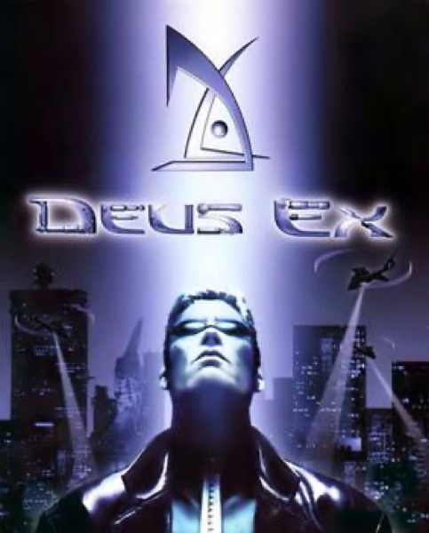

Immersive Sim · 2000
Deus Ex
Conspiracy RPG where the vent, the hack and the gun were all valid.

Cover: Wikipedia: Deus Ex (video game)
Facts
- Released
- 2000-06-23
- Genre
- Immersive Sim
- Category
- Immersive Sim
- Platforms
- PC, PlayStation
- Developers
- Ion Storm
- Publishers
- Eidos Interactive, Suntendy Interactive Multimedia Co.,Ltd.
PC requirements
- Minimum
- [object Object]